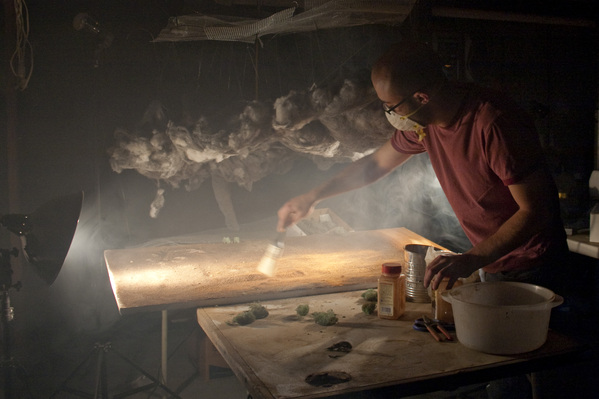

Making of “Strange Worlds”
Two months ago I posted photographer Matthew Albanese and how he crafts detailed landscape using photographic techniques and clever use of objects and materials. Today on Behance I discovered behind the scene images of how he crafted the landscape models. Seeing all the work that goes into his art makes me appreciate it that much more.
View the full set of behind the scene images and the original Strange Worlds photography.